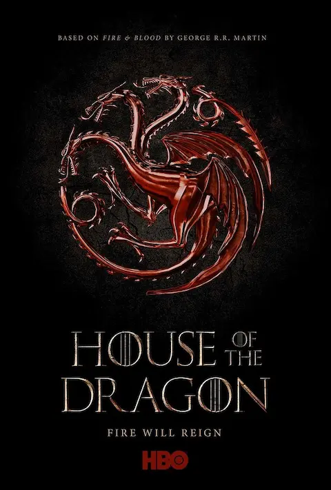

La premiere oficial de House of the Dragon T3 se celebra hoy lunes 9 de junio en Londres, con todo el elenco esperado en la alfombra roja. La confirmación llegó del propio Steve Toussaint, que interpreta a Corlys Velaryon, a través de su Instagram Story. Con los nuevos incorporados al reparto para esta temporada, la presencia de estrellas en el evento promete ser la más numerosa de la serie hasta la fecha.
El primer capítulo de la temporada tendrá además un estreno anticipado en el Taormina Film Festival de Italia, que arranca el 10 de junio. El episodio inaugural de la T3 abrirá el festival, lo que significa que los asistentes podrán verlo 11 días antes de que el resto del mundo pueda hacerlo en HBO y Max el 21 de junio. Es un movimiento estratégico de HBO para generar conversación y primeras reacciones antes del estreno global.
El primer episodio tendrá una duración de 72 minutos y se abrirá con la Batalla del Golfo, la gran secuencia de acción que muchos consideraban que debería haber sido el final de la T2. 72 minutos es casi el doble de la duración media de un episodio estándar de la serie, lo que confirma que Ryan Condal va a darle a esta batalla el espacio que merece. Es el tipo de opening que puede redefinir las expectativas de toda la temporada de un solo golpe.
Con el estreno global el 21 de junio a las 9 PM ET en HBO y la temporada finalizando el 9 de agosto, quedan exactamente 12 días. Los ocho episodios se emitirán semanalmente, con la batalla de Aemond y Daemon sobre el Ojo de los Dioses como el duelo más esperado de toda la temporada. Las primeras reacciones del Taormina llegan en 24 horas. El verano televisivo más intenso de los últimos años está a punto de arrancar.